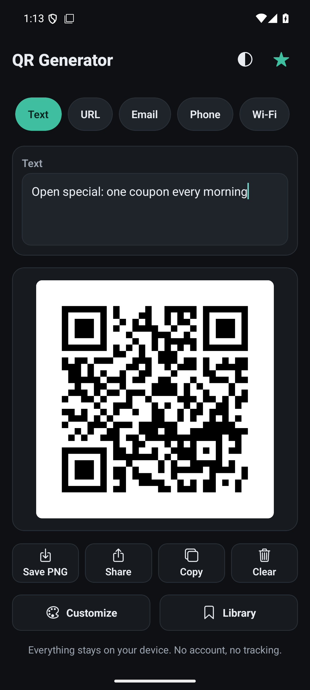
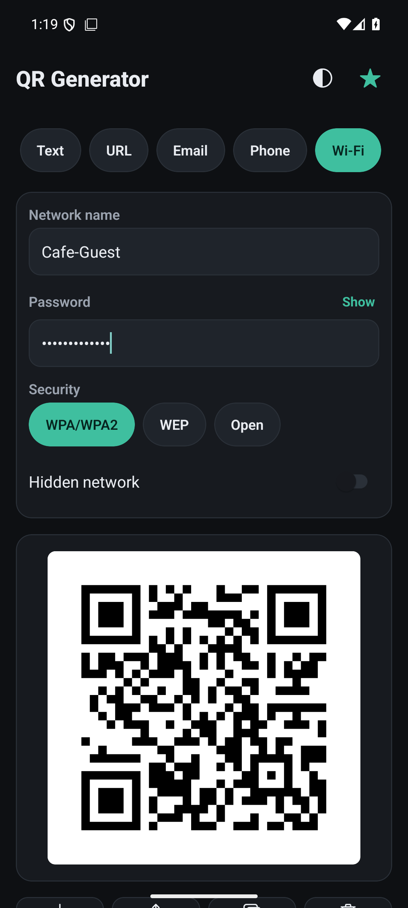
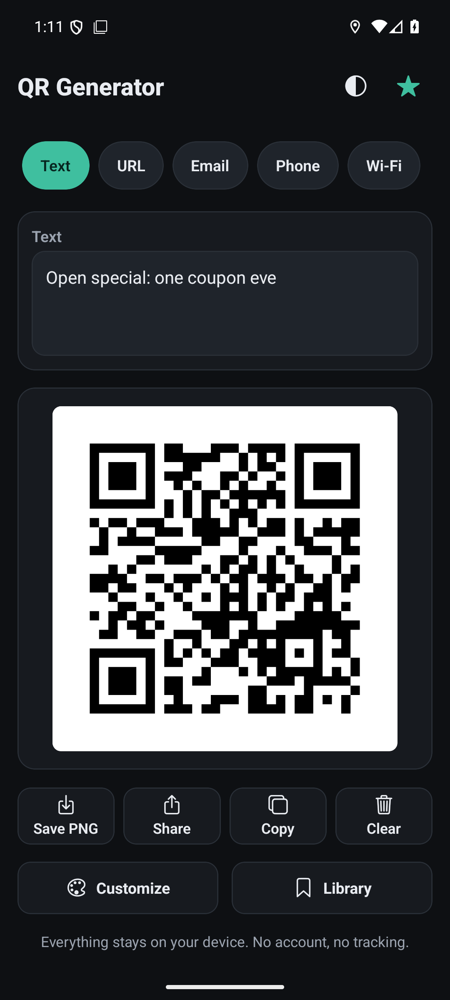

Independent beta, not a Google Play release. The APK is downloaded directly from GitHub and sideloaded onto your phone. In this beta build purchases are disabled and premium features are unlocked for testing.
QR codes made on your phone, with no account
QR Generator turns text, links, email addresses, phone numbers and Wi-Fi credentials into a QR code. The code is drawn on the device as you type. Nothing you enter is uploaded, and the app works with airplane mode on.
The Wi-Fi code is the reason this app exists: a guest scans it with the stock camera app and joins your network, instead of retyping the password at the counter.
Download the beta APK (83 MB)
What it can encode
| Type | You enter | What happens when it is scanned |
|---|---|---|
| Text | Any text | Displayed as entered |
| URL | A link | Opens in the browser |
| Address, subject, message | Opens the mail composer | |
| Phone | A number | Offers to call it |
| Wi-Fi | Network name, password, security, hidden-network flag | Offers to join the network |
Wi-Fi codes for guests
Enter the network name and password, choose WPA/WPA2, WEP or an open network, and flip the hidden-network toggle if your network does not broadcast its name. The code updates as you type.
Save it as a PNG, send it through the system share sheet, or copy the image and paste it into a poster or receipt. Three QR styles (square, rounded, dots), colour choices and a centre logo are in the Customize sheet.
A Wi-Fi code contains the password in plain text, which is how Wi-Fi QR codes work. Anyone who can see the code can read it, so place it where you would place the password.

What leaves your phone: nothing
- No account, no sign-up, no email address requested.
- No network requests in the app code. There is no server to send to.
- No analytics, no crash reporting, no advertising SDK.
- Saved codes, history and settings are stored in local app storage and disappear if you clear app data.
- The app requests no runtime permission. The manifest declares
INTERNETfor the development server, and explicitly removes camera, microphone and storage permissions.
The full policy is in PRIVACY_POLICY.md. It is a draft and still has a placeholder contact line that has to be filled in before it is published anywhere.
Installing the beta
- Download QR-Generator-beta-1.0.0.apk with the button above, and move it to your Android phone (or download it on the phone).
- Open the file. Android blocks installs from unknown sources by default, so it asks for permission. Tap Settings, allow your browser or file manager to install unknown apps, go back and confirm. You can turn the permission off again afterwards.
- Open QR Generator. Premium features show as unlocked.
The APK is signed with the project's own release key, not with Google Play App Signing. It cannot be installed over a copy from Google Play once the app exists there.

Known limitations
- Android only. There is no iOS version.
- It creates codes, it does not scan or read them.
- This beta cannot be purchased: premium is granted by configuration, so the store path is not exercised.
- A large centre logo reduces how far away and at what angle a phone can read a dense code.
- Hobby project. No security audit, no guaranteed response time.
Tell me what breaks
Bug reports and ideas go to the issue tracker. Include your Android version, the device model, and what you did.
Most useful right now
Does a Wi-Fi code scan and join your network on the first try, with the
stock camera app?